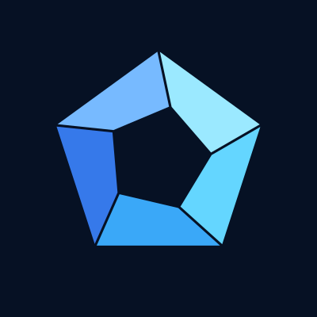

感染症モデル · 論文 16
発生数から、未知の感染段数と感染力の重みを見分ける
完全な無雑音の発生数の芽と既知の総人口から、正の単一鎖モデルの未知の有限段数・二つの率・正規化した重み・全初期状態が一意に決まります。 双方で率・重み・全初期状態が正、w₁ = 1、遷移率が全段に共通、物理時間が同じことが条件です。
確かめ方：文章の証明を、五つの有限の正確計算と段階的なAI点検で補っています。構成部分の点検には以前の文脈があり、統合稿は別のAI読者も読みました

滝本竜彦の研究室です。AIとともに数学と科学の問いを調べ、確かめられる形で結果を公開しています。
人間の査読は受けていません。確認方法と範囲は各成果に記しています。
フォロー：X @tkmt_lab · Substack （Spira Lab の読み物。研究の成果とは別）
公開した成果からの抜粋です。すべての研究を見る →
感染症モデル · 論文 16
完全な無雑音の発生数の芽と既知の総人口から、正の単一鎖モデルの未知の有限段数・二つの率・正規化した重み・全初期状態が一意に決まります。 双方で率・重み・全初期状態が正、w₁ = 1、遷移率が全段に共通、物理時間が同じことが条件です。
確かめ方：文章の証明を、五つの有限の正確計算と段階的なAI点検で補っています。構成部分の点検には以前の文脈があり、統合稿は別のAI読者も読みました
数理物理 · 論文 14
材料と中心値 δc = 8 を一つに固定し、正則で有限な弾性球の 2M/R が 0.91089951 と 0.91180552 の間にあり、8/9 を超えることを区間認証しました。物質としての妥当性と安定性は対象外です。
確かめ方：465 管と 1592 管の二つの区間証明書を、共通の整数区間エンジンで再生
区画模型 · 論文 17
一般的局所識別可能性など原著の仮定のもとで、漏出位置が出力より前なら全 n ≥ 3 で包含を証明しました。出力と同じ位置を含む全称包含には、すべての率が正の3区画模型の反例があります。
確かめ方： 多項式の核恒等式と二列一致による文章の証明を、三つの厳密な有限検算とヒント付きの段階的AI点検で補っています。後の原稿のAI点検で、説明を二か所修正しました。